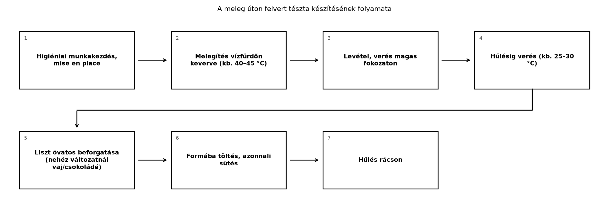

A cukrászüzemben egy esküvői torta három emeletét úgy kell megtervezni, hogy a felső szint ne nyomja össze az alsó lapot. A vendég olyan piskótát kér, amelyet megkenhetünk krémmel, befedhetünk bevonóval, darabolhatunk. A hidegen felvert piskóta finom, de könnyen esik össze a krém alatt, vagy ragad a kikészítés során. A melegen felvert, úgynevezett genoise-típusú tészta sűrűbb, rugalmasabb és stabilabb habot ad. Ezért jobban bírja a tömegét, a nedves tölteléket és a szeletelést. A melegítés a cukrot teljes mértékben feloldja, a habot pedig gyorsabban és nagyobb térfogatra veri fel; a fehérje alvadása csak a sütőben, kb. 60 °C fölött kezdődik. Így a tésztaszövet egyenletesebb lesz. A hőfok betartása nélkül azonban a tojás kicsapódik, a tészta tömörré válik, vagy a sütőben felpúposodik, majd összeesik. Ebben az alfejezetben ezt a rugalmas, meleg úton készült piskótacsaládot tanuljuk meg.
Képzeljünk el egy konyhai szivacsot, amelyet kinyomnak, majd elengednek. A meleg úton felvert genoise tészta hasonló: apró, egymástól vékony falakkal elválasztott légbuborékokból áll. A buborékok fala a hőkezelt tojásfehérjéből, a keményítőből és a zsírból épül fel. A meleg verés során a cukor teljesen feloldódik, a massza hígabb lesz, ezért gyorsabban és nagyobb térfogatra habosodik; a fehérje csak a sütőben, kb. 60 °C fölött alvad meg. A sütés a falat megszilárdítja, a gőz tágul, a cukor karamellizálódik, a keményítő csirízesedik. Az eredmény egy olyan tésztalap, amely elbírja a tortakrémet és a bevonót is.

Ábra leírása: A folyamatábra a meleg úton felvert tészta lépéseit mutatja a munkakezdéstől a hűlésig. A hőmérséklet- és időértékek a gyártói és szakirodalmi ajánlásoknak megfelelően ellenőrizendők.
Definíció. Meleg úton felvert tészta (genoise, pâte génoise) az a könnyű, piskóta jellegű tészta, amelynél a tojást (egész tojást vagy tojássárgáját és tojásfehérjét külön) cukorral melegen, vízfürdő felett vagy enyhe hőközlés mellett verjük fel, majd a meleg habhoz keverjük a lisztet és a további szárazanyagokat. A tésztát azonnal sütjük.
Definíció. Könnyű meleg felvert az a melegen vert piskóta, amely a tojáson, cukron, liszten és esetleg keményítőn, kakaón vagy olajos magon kívül jelentős zsiradékot nem tartalmaz. A szerkezetét a tojáshab és a keményítő tartja meg.
Definíció. Nehéz meleg felvert az a melegen vert tészta, amelybe a hab felverése után olvasztott vajat, olajat, csokoládét vagy nagyobb mennyiségű olajos magvat keverünk. A hozzáadott zsiradék sűríti a masszát, gazdagabbá teszi az ízét, de a habot is terheli, ezért a bedolgozás során különösen óvatosnak kell lenni.
Szabály. A melegen felvert habot mindaddig verni kell, amíg a tészta hőmérséklete a hideg verési hőmérsékletre (kb. 25–30 °C, ellenőrizendő: a receptúra és a gépi verés szerint) vissza nem hűl. Csak ekkor szabad a lisztet hozzákeverni. A meleg hab ugyanis még lágy, a liszt súlya alatt könnyebben összeesik, és a tészta sűrűbbé, gumisabbá válik.
Továbbvitt eredmény. A meleg felvert tészták és a piskótahibák okait a későbbi fejezetekben használjuk: a Tészták és kisült termékeik anyaghányad-számítása, a tésztakészítés higiéniája alfejezetben a sütési módok kiválasztásához, a Vajas, leveles, felvert és hengerelt tésztából készült uzsonnasütemények alfejezetben a felvert tésztás uzsonnasüteményekhez, a Kikészített sütemények és torták: jellemzők és tortakészítési műveletek alfejezetben a tortaalapok elkészítéséhez, valamint a Nemzetközi tészták, töltelékek és betétek alfejezetben a külföldi piskótatípusok azonosításához.
A meleg felvert tészta tojást, lisztet és gyakran vajat vagy csokoládét tartalmaz. A munkakezdéskor a korábban tanult higiéniai rend szerint járunk el: tiszta munkaruha, hajháló, kézmosás, fertőtlenített eszközök. A tojásokat felhasználás előtt átvizsgáljuk, repedt vagy szennyezett héjú tojást nem használunk. A tojást felütés előtt szükség esetén lemoshatjuk, de a héja nem érintkezhet a belső tartalommal. A tojástömeget grammban mérjük, mert a darabszám a tojás méretétől függ.
Receptúra alapanyag-táblázat – klasszikus meleg felvert tortalap
| Nyersanyag | Mennyiség (g) | Megjegyzés |
|---|---|---|
| Egész tojás | 500 | Szobahőmérsékletű, felütve mérve |
| Kristálycukor | 300 | Finom szemcséjű |
| Liszt (finomliszt) | 300 | Átszitálva |
| Vaj (olvasztott, langyos) | 0 vagy 60 | Nehéz változathoz |
| Összes tömeg | 1100 vagy 1160 | A vaj nélküli és vajas változat |
A táblázat alapmennyisége egy 24 cm átmérőjű, magas tortalap. Az arány tájékoztató, a gyakorlatban a receptúra és a liszt sikértartalma szerint módosulhat (ellenőrizendő: a saját recept).
A tojást és a cukrot egy keverőtálba tesszük, majd vízfürdő fölé helyezzük. A vízfürdő alatt enyhén forrásban lévő, de nem bugyogó vizet értünk; a tál alja ne érjen a vízbe. Folyamatos kézi habverővel vagy alacsony fokozaton géppel keverjük. A cél, hogy a tojáskeverék hőmérséklete elérje a 40–45 °C-ot (ellenőrizendő; 50 °C fölött a tojás a tál alján kicsapódhat, ezért folyamatosan keverjük; a gyakorlati hőfok a verési sebességtől és a tojásméretektől is függ). Ezen a hőmérsékleten a cukor teljesen feloldódik, és a tojáskeverék enyhén sűrűsödik.
A vízfürdő helyes és hibás összeállítását az alábbi metszet mutatja: a keverőtál a lábas peremén ül, az alja nem ér a vízbe, a víz csak enyhén gyöngyözik; a tál pereménél felszálló gőz forrázást okozhat, ezért edényfogót vagy száraz kendőt használunk, és a lábas nyele nem lóghat ki a tűzhely elé.
Miért. A cukor oldódáshoz vizet von el a tojásfehérjéből, ezért a hideg verésnél gyakran maradnak kristályok. A melegítés gyorsítja az oldódást, és hígabbá teszi a masszát, ezért a hab gyorsabban és nagyobb térfogatra képződik. A fehérje nem alvad meg 40–45 °C-on (ellenőrizendő: élelmiszer-kémiai forrás).
A meleg tojáscukor-keveréket levesszük a vízfürdőről, és géppel vagy kézi habverővel magas fokozaton verni kezdjük. A habverő fejének döntése fontos: a tál alját és oldalát is érje a verő, hogy ne maradjon fel nem vert tojás. A verés közben a massza térfogata növekszik, színe világossárgává válik, és a hab csepp-, majd szalagot húzó állagú lesz. A verést addig folytatjuk, amíg a massza vissza nem hűl kb. 25–30 °C-ra (ellenőrizendő). Ekkor a hab térfogata már nem nő tovább, és a tojás fehérje stabil, de még rugalmas.
A massza hőmérsékletének menetét a művelet során az alábbi szemléltető görbe mutatja: melegítés vízfürdőn kb. 40–45 °C-ig, hűlésig verés kb. 25–30 °C-ig, a liszt beforgatása 30 °C alatt, majd a sütőben a tészta belseje fokozatosan felmelegszik, és kb. 60 °C fölött a fehérje alvad, a keményítő csirízesedik. A HTML-kiadásban a szakaszok lépésenként kiemelhetők, és egy csúszkával kipróbálható, mi történik, ha a lisztet túl meleg habhoz adjuk.
Hiba. Ha a meleg keveréket túl sokáig verjük, a hab túlszárad, a tészta sűrűbb és szárazabb lesz. Ha túl rövid ideig verjük, a hab meleg marad, a liszt hozzáadásakor a buborékok összeesnek.
A lisztet és a keményítőt, kakaót vagy olajos magvat átszitáljuk. A habhoz fokozatosan, fakanállal vagy spatulával, laza, alulról felfelé ívelő mozdulattal forgatjuk a szárazanyagot. A cél az, hogy a liszt egyenletesen eloszoljon, de a hab ne törjön össze. A nehéz felvert esetén az olvasztott, langyos vajat vagy az olvasztott csokoládét előbb a massza egy kis részével keverjük össze, majd ezt a keveréket forgatjuk a többihez.
Szabály. A vajat mindig a hab egy kis részéhez keverjük előbb, és csak ezután adjuk a teljes habhoz. Ellenkező esetben a zsiradék közvetlenül a hab felületére kerül, a fehérjefilmek összeesnek, és a tészta tömör lesz.
A formát sütőpapírral béleljük, vagy vékonyan kivajazzuk és lisztezzük. A masszát egyenletesen elosztjuk a formában. A tésztát azonnal a sütőbe kell tenni, mert a hab a várakozás alatt ülepedik. A sütési hőmérséklet általában 170–180 °C, légkeveréses sütőben ennél alacsonyabb (ellenőrizendő: a sütő típusa és a forma mérete szerint). A sütő ajtaját az első 20 percben nem nyitjuk ki, mert a hőingadozás a tészta közepét beszakítja.
Kritikus pont. A tojásos tészta hőkezelése: a tészta maghőmérséklete érje el a biztonságos hőkezelési értéket (ellenőrizendő: hatályos élelmiszer-biztonsági útmutató szerinti maghőmérséklet és idő). A nyers tojást tartalmazó tésztamassza nem fogyasztható hőkezelés nélkül. A tésztát tűpróbával ellenőrizzük: a beleszúrt fapálcika száraz, nem ragacsos.
Könnyű meleg felvert (klasszikus genoise): az alaprecept szerint készül, liszt és tojáshab aránya közel azonos. Felhasználjuk tortaalapnak, piskótatekercsnek, valamint kettévágva és töltve. Jól szívja magába a kávés, rumos vagy gyümölcsös áztatószirupot.
Nehéz meleg felvert olvasztott vajjal: a vaj aránya a tojástömeghez képest 10–20% (ellenőrizendő). A tészta nedvesebb, tömörebb, de még rugalmas; jól illik hozzá a kávé, karamell, csokoládé. A vajat előbb a massza egy kis részével keverjük össze, majd ezt forgatjuk a többihez.
Nehéz meleg felvert olvasztott csokoládéval vagy kakaóval: a csokoládét vízfürdőn, legfeljebb 45 °C-ra melegítjük (ellenőrizendő), majd a hab egy részével homogenizáljuk. A kakaóport a liszttel együtt szitáljuk. A csokoládés massza hajlamosabb a süppedésre, mert a kakaóvaj megterheli a habot.
Nehéz meleg felvert olajos maggal: diót, mandulát, mogyorót őrölve vagy darálva adjuk a masszához. Az olajos mag természetes olaja és a liszt felszívó képessége befolyásolja a tészta nedvességét; a liszt mennyiségét kismértékben csökkenthetjük. A diós vagy mandulás genoise tipikus alapja a francia, olasz és osztrák tortáknak.
Megjegyzés. A nehéz felvert több zsírt tartalmaz, ezért sűrűbb a tésztaszövet. A tészta kevésbé szárad ki, de hajlamosabb lehet a tömörödésre, ha a keverést nem óvatosan végezzük.
A melegen felvert tésztát leggyakrabban tortalapnak, kisebb lapoknak, keskeny csíkoknak vagy piskótatekercs-alapnak sütjük.
Tortalap: a masszát kapcsos formába vagy tortakarikába töltjük. A lap magassága sütés után kb. a forma magasságának 2/3-át érje el. A tészta hűlés közben kissé összehúzódhat; a formát csak langyosan vegyük le.
Piskótatekercs: a masszát sütőpapírral bélelt, lapos tepsire kenjük egyenletesen. A tésztaréteg vastagsága 1–1,5 cm. A sütési idő rövidebb, a hőmérséklet valamivel magasabb. A lapot sütés után azonnal, még melegen feltekerjük egy tiszta konyharuhában, hogy a későbbi tekerésnél ne repedjen.
Kisebb szelet- és minyonalapok: a masszát kisebb formákba, csészékbe vagy szögletes keretbe töltjük. Az egyenletes vastagság és a gyors hőelvonás eléréséhez a légkeverés és a megfelelő sütőpapír fontos.
Sütési módok: statikus (alsó-felső) sütőben a hőmérséklet 170–180 °C, légkeverésnél 150–160 °C (ellenőrizendő). A tészta sütési ideje a vastagságtól és a forma anyagától függ. Az alacsonyabb hőmérséklet egyenletesebb, de hosszabb időt igényel, a magasabb hőmérséklet gyorsabb, de a felület hajlamosabb a repedésre.
Higiénia. A kisült tésztalapot tiszta rácson hűtjük, letakarva. A meleg tésztalapot nem szabad zárt dobozba tenni, mert a gőz lecsapódva a felületet nyálkásítja, és a mikrobás növekedést gyorsítja.
A gyakorlatban a receptben megadott tojásmennyiségtől eltérő adagszámú tésztát kell készíteni. A klasszikus genoise aránya: 500 g tojáshoz 300 g cukor és 300 g liszt. A szorzószámot a korábban tanult módon számítjuk.
1. számítás (A): tortalap kicsinyítése
Adott: 500 g tojásból 1100 g massza készül, ami 24 cm-es formához elég.
Kérdés: mennyi tojás, cukor, liszt kell egy 18 cm-es formához, ha a
massza tömege az átmérő négyzetével arányos?
Képlet:
Tojás:
Cukor:
Liszt:
Ellenőrzés: az össztömeg kicsiben , ami a nagy összes tömeg 1100 g-jának -szerese (), tehát a számítás helyes. ∎
2. számítás (B): sütési veszteség
Adott: a tészta nyers tömege 1100 g, a kisült lap tömege 990 g. Kérdés:
hány százalék a sütési veszteség, és mennyi a bruttó tömeg, ha 12%-os
veszteséggel számolunk és 1000 g kisült lapot szeretnénk?
Veszteség:
Ha 1000 g nettót akarunk 12%-os veszteséggel:
Ellenőrzés: 1136 g nyers tésztának a 12%-a 136 g veszteség, marad 1000 g. ∎
3. számítás (C): tojás arányosítása
A recept 500 g tojást kér. A műhelyben L-es tojás van, átlagosan kb. 60
g/db, héj nélkül kb. 53 g (ellenőrizendő: tömegosztály). Ha 10 db tojást
töröd fel (530 g), mennyi cukor és liszt tartozik hozzá?
Cukor:
Liszt:
Ellenőrzés: . ∎ A darabszám csak tájékoztató, mindig a feltört tojás tömegét mérjük.
Cél: egy 24 cm átmérőjű, kettőbe vágható, stabil genoise-tortalap készítése, sütése és nyugalmi állapotban történő kihűtése.
Eszközök és anyagok: keverőtál, habverő vagy gépi habverő, vízfürdő, szilikon spatula, sütőpapír, 24 cm-es kapcsos forma, sütő, tűpróba pálca, rács. Nyersanyagok: 500 g tojás, 300 g kristálycukor, 300 g finomliszt, szükség esetén 60 g olvasztott vaj. Allergének: glutén, tojás, tej (a vajas változatnál).
Higiéniai munkakezdés: munkaruha, hajháló, ékszer eltávolítása, kézmosás, tiszta eszközök, tojás átválogatása.
Biztonsági korlát. A gépi habverőt csak oktatás után és felügyelet mellett használjuk; a gép járása közben a tálba benyúlni tilos. A forró vízfürdő és a forró sütő érintése égési sérülést okoz; hőálló edényfogót, kesztyűt és hosszú ujjú munkaruhát használjunk.
Technológiai lap – Klasszikus meleg felvert tortalap (genoise)
1. Termék neve: Meleg úton felvert piskótalap
(genoise)
2. Alapmennyiség: 1 db 24 cm-es tortalap, kb. 1100 g
nyers massza, sütve kb. 970–990 g (10–12% veszteség, tájékoztató)
3. Anyaghányad táblázat
| Nyersanyag | Mennyiség (g) | Megjegyzés |
|---|---|---|
| Egész tojás | 500 | Szobahőmérsékletű |
| Kristálycukor | 300 | Finom |
| Finomliszt | 300 | Átszitálva |
| Vaj (opcionális) | 0–60 | Olvasztott, langyos |
| Összes tömeg | 1100–1160 | A vaj nélküli és vajas változat |
4. Műveleti sorrend
5. Kritikus pontok:
a) Tojásos tészta hőkezelése – a maghőmérséklet érje el a biztonságos
értéket (ellenőrizendő).
b) A tészta azonnali sütése – a hab ülepedik, a várakozás tömörödést
okoz.
c) Hűlés közben a lapot ne takarjuk le, amíg langyos.
6. Allergének a kész lapban: glutén (búzaliszt), tojás; a vajas változatnál tej is.
7. Minőségi jellemzők: egyenletes aranybarna felület, rugalmas, vágásnál nem morzsálódó, levegős szerkezet, semleges, vajas változatnál enyhén vajas íz.
8. Tárolás, eltarthatóság: hűtve, letakarva, hűtőben 2–3 nap; fagyasztva akár 1 hónap (ellenőrizendő: a gyakorlati eltarthatóság a csomagolástól függ).
A kész meleg felvert tésztát a következő szempontok szerint ellenőrizzük:
Tömegellenőrzés: a sütési veszteség 10–15% közötti lehet (ellenőrizendő). A lap tömege ne térjen el 5%-nál nagyobb mértékben a recept szerint számított nettó tömegtől.
Az alábbi metszetek a jó tortalapot és a leggyakoribb hibákat mutatják; az okokat a hibák leírása részletezi.
Hiba 1: A tészta sütés közben összeesik, a közepe
besüllyed.
Tünet: a sütőből kivett lap közepe petyhüdt, a forma oldaláról
elvált.
Ok: a sütő hőmérséklete túl alacsony, a sütő ajtaját túl korán
kinyitották, vagy a habot túl sokáig verték, így a gőz nem tudta
megtartani a szerkezetet.
Megelőzés: pontos hőfok, az első 20 percben ne nyissuk az ajtót, a
habverést ne vigyük túl.
Hiba 2: Tömör, sárga sáv a lap alján.
Tünet: a piskótalap alján egy vékony, kemény, tömör réteg látszik.
Ok: a lisztet nem kevertük el egyenletesen, vagy a habot túl gyorsan
hűtöttük ki, és a nehezebb liszt leülepedett.
Megelőzés: a lisztet több részletben, óvatosan forgassuk, a massza
hűlésig verése közben ne hagyjuk a tálat mozdulatlanul. A bekeverés után
azonnal süssük.
Hiba 3: A tészta felrepedt, a teteje hegyes.
Tünet: a sütőben a tészta közepén nagy repedés, a felület nem
sima.
Ok: túl magas sütőhőmérséklet, túl kevés nedvesség a masszában, vagy a
sütőben egyenetlen a hőeloszlás.
Megelőzés: alacsonyabb hőfok, hosszabb sütési idő; a massza
nedvességtartalmát a zsiradék vagy egy kis mennyiségű víz adagolásával
lehet növelni.
Hiba 4: A lap közepe nyers marad.
Tünet: a tűpróbán a pálcika ragacsos, a középső rész sápadt.
Ok: a sütő hőfoka túl alacsony, a sütési idő rövid, vagy a forma túl
magas.
Megelőzés: a sütőt pontosan előmelegítjük, a forma méretét a
tésztamennyiséghez igazítjuk, a tésztát nem töltjük a forma 3/4-énél
magasabbra.
Hibaelemzés: összeesett genoise.
Tünet: a 24 cm-es tortalap a sütőből kivéve 4 perc múlva a közepén 2
cm-rel besüllyedt, a felület ráncos.
Hipotézis: a sütőajtót 15 perc után kinyitották, vagy a masszát túl
hosszú ideig tartották sütés előtt.
Ellenőrzés: a sütő hőfoknaplójában látjuk, hogy a hőmérséklet 165 °C-ról
140 °C-ra esett; a lap a sütőből kivéve is a hőmérséklet-ingadozás
nyomait mutatta.
Ok: a tojáshabot nem verték hűlésig, a lisztet melegen keverték hozzá,
ezért a hab összeesett; a hőmérséklet-ingadozás rontotta a
gőznyomást.
Javítás: a lapot nem tudjuk megmenteni; felhasználhatjuk kisebb
darabokra vágva, áztatósziruppal megnedvesítve egy trüffeltortához, de a
tömör réteget el kell távolítani.
Megelőzés: hőfoknaplózás, a massza hűlésig verése, azonnali sütés.
Egy cukrászatban a délelőtti műszakban 10 db genoise-tortalapot gyártunk. A tanuló a harmadik adagnál a masszát túl sokáig verte, mert közben a raktárból hozott lisztet. A hab felülete beesett, de a tanuló úgy gondolta, a sütés majd kijavítja. A lap a sütőben nem emelkedett meg, a közepe tömör maradt. A műszakvezető a lapot kettévágta, és megállapította, hogy a belső szerkezet sűrű, gumis. A lapot félretette, és kisebb, áztatott minyonokhoz használta fel, mert a tömör szerkezet áztatva elfogadható. A tanuló a hibajegyzőkönyvbe beírta az okot, és a következő adagnál pontosan követte a hűlésig verés szabályát. Az eset tanulsága: a meleg felvert tészta minden lépése a hab stabilitását szolgálja, a hőfok és az idő nem önkényes.
A válaszokat a Megoldások elején találja „Önellenőrzés – válaszok” alcím alatt.
1. feladat (A). Határozd meg a meleg úton felvert
tészta definícióját, és írd le a vízfürdő szerepét!
2. feladat (A). Számítsd át a klasszikus genoise
receptet 500 g tojásról 350 g tojásra! Mennyi cukor és liszt kell?
3. feladat (B). Egy 1100 g nyers tésztából sütve 946 g
lap lesz. Mennyi a sütési veszteség százalékban? Hány gramm nyers
tésztát kell készíteni, ha 900 g kész lapot szeretnénk, és a veszteség
14%?
4. feladat (B). A nehéz meleg felvert tésztához 60 g
vajat adunk 500 g tojáshoz. Mennyi a vaj százalékos aránya a tojás
tömegéhez képest? Miért kell a vajat előbb a massza egy részéhez
keverni?
5. feladat (C). Elemezd a következő hibát: a piskótalap
a sütőben szépen feljött, de kivétel után 5 perccel összeesett, a közepe
behorpadt. Sorold fel a lehetséges okokat, és mondd meg, hogyan
ellenőriznéd a sütő hőmérsékletét!
6. feladat (D, gyakorlati). Készíts el egy 24 cm-es
meleg úton felvert tortalapot a technológiai lap szerint. Töltsd ki a
sütési naplót: sütő hőmérséklete, sütési idő, tömeg nyersen és sütve,
tűpróba eredménye, a lap magassága. Értékeld a lap minőségét a megadott
szempontok szerint.
A meleg úton felvert tészta (genoise) olyan piskóta, amelynél a tojást cukorral melegen, vízfürdőn verjük fel. A vízfürdő szerepe: a tojáscukor-keveréket 40–45 °C-ra melegíti (ellenőrizendő), ami elősegíti a cukor oldódását és a gyorsabb, nagyobb térfogatú habképzést; a fehérje csak a sütőben, kb. 60 °C fölött alvad meg. A meleg masszát hűlésig verjük, így sűrű, stabil habot kapunk.
Cukor:
Liszt:
A tojás 350 g-jához tehát 210 g cukor és 210 g liszt kell. Ellenőrzés:
az arány 350:210:210 = 5:3:3. ∎
Sütési veszteség:
Ha 900 g kész lapot szeretnénk 14%-os veszteséggel:
Ellenőrzés: 1047 g nyers tésztából 14% veszteség 146 g, marad 901 g, ami elfogadható. ∎
A vaj aránya a tojáshoz:
.
A vajat azért kell előbb a massza egy részéhez keverni, mert így a hab
nagy részét nem kell közvetlenül a zsiradékkal érintkeztetni. A vajas
keveréket ezután a többi habhoz forgatjuk, így a légbuborékok többsége
épen marad.
A hiba lehetséges okai: a sütő hőmérséklete túl alacsony, ezért a tojásfehérje nem alvadt meg időben; a sütőajtót túl korán kinyitották; a masszát túl sokáig hagyták sütés előtt; a habot túl lágyra verték. Ellenőrzés: sütőhőmérővel ellenőrizni a belső hőfokot, hőmérsékletnapló, a sütő fűtőszálának egyenletessége. Javítás: a lapot szeletként, áztatva használjuk fel, de tömör belseje miatt nem alkalmas töltött tortaalapnak.
A tanuló a technológiai lap alapján készíti el a lapot. Az értékelés szempontjai: a munkafolyamat higiéniája, a hőfokok betartása, a massza állaga a bekeverés előtt, a sütési idő és hőfok pontossága, a tűpróba eredménye, a lap magassága és felülete, a sütési veszteség mértéke. A sütési naplóban rögzíteni kell a nyers és sütött tömeget, a veszteséget, a magasságot és a minőségi megfigyeléseket. A várt eredmény: a lap egyenletes, rugalmas, a közepén nincs bemélyedés, a tömegveszteség 10–15% közötti (ellenőrizendő).
A melegen felvert genoise-tészta alapja a melegített, majd hűlésig vert tojáskeverék. A tojást cukorral vízfürdőn 40–45 °C-ra melegítjük (ellenőrizendő), hogy a cukor oldódjon és a massza gyorsabban, nagyobb térfogatra habosodjon. A meleg masszát addig verjük, amíg 25–30 °C-ra hűl, és szalagot húz. Ezután a lisztet óvatosan, spatulával forgatjuk bele. A nehéz változatok olvasztott vajat, csokoládét vagy olajos magvat tartalmaznak, ezeket előbb a massza kis részéhez keverjük. A tésztát azonnal sütjük 170–180 °C-on (ellenőrizendő). A leggyakoribb hibák: összeesés (ok: alacsony hőfok, korai ajtónyitás, lágy hab), tömör sáv (ok: a liszt leülepedése), repedés (ok: túl magas hőfok), nyers közép (ok: túl alacsony hőfok vagy vastag forma). A kész lap minőségét metszettel, tűpróbával, tömeggel és érzékszervi tulajdonságokkal ellenőrizzük. A meleg felvertet a tojásos, tejes tésztákhoz tartozó hőkezelési és hűtési szabályok szerint kezeljük, az allergének között a glutént, tojást és a vajas változatnál tejet forgatjuk. A technológiai lap és a hiba-elemzés megalapozza a későbbi torta- és nemzetközi alfejezeteket.